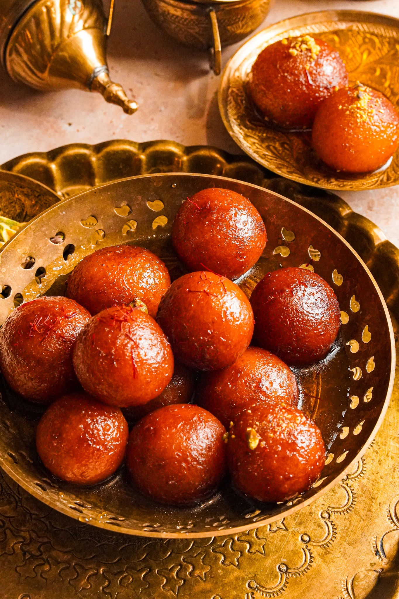

Classic Gulab Jamun Recipe
Ingredients:
- 1 cup milk powder
- ¼ cup all-purpose flour
- ½ teaspoon baking soda
- 2 tablespoons ghee
- ¼ cup milk
- 1 ½ cups sugar
- 1 ½ cups water
- 4 green cardamom pods, crushed
- 1 teaspoon rose water
- Oil or ghee for frying
- Chopped pistachios for garnish
Instructions:
- Mix milk powder, flour, baking soda, and ghee in a bowl.
- Add milk gradually to form a soft dough. Let it rest for 10 minutes.
- Shape the dough into small balls, ensuring they are smooth without cracks.
- Heat oil or ghee in a pan over medium heat.
- Fry the balls until golden brown, stirring gently for even cooking.
- In a separate pot, boil sugar, water, and cardamom until slightly sticky.
- Turn off the heat and add rose water to the syrup.
- Soak the fried gulab jamun in warm syrup for at least 2 hours.
- Garnish with chopped pistachios and serve warm.